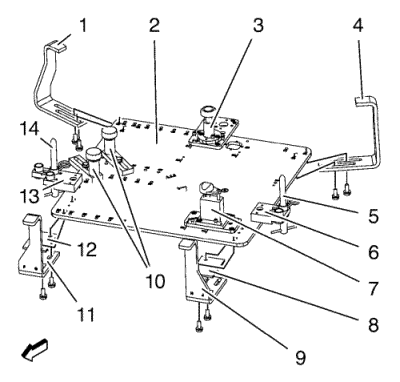
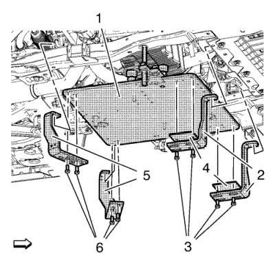
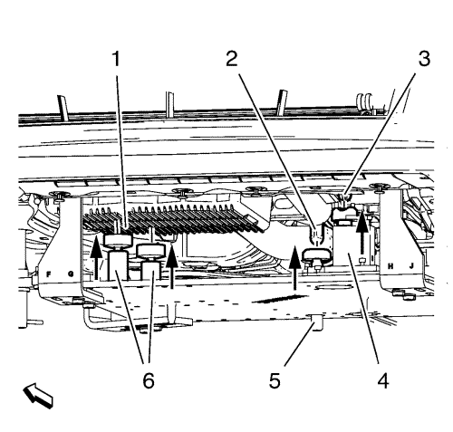

Montaje del cambio/motor
Herramientas especiales
| • | CH 49290 Soporte del motor/cambio |
| • | CH 49290-1 Placa de base |
| • | CH 49290-4 Soporte de pasador derecho |
| • | CH 49290-5 Soporte de pasador izquierdo |
| • | CH 49290-7 Placa del adaptador |
| • | CH 49290-8 Soporte de fijación delantero derecho |
| • | CH 49290-9 Soporte de fijación delantero izquierdo |
| • | CH 49290-10 Soporte de fijación trasero derecho |
| • | CH 49290-11 Soporte de fijación trasero izquierdo |
| • | CH 49290-12 Placa del adaptador |
| • | CH 49290-14 Soporte de apoyo |
| • | CH 49290-15 Placa del adaptador |
| • | CH 49290-16 Soporte de apoyo |
| • | CH 49290-18 Soporte de apoyo |
Si desea informarse sobre herramientas regionales equivalentes, consultar
Herramientas especiales : 1.6L LXT .
Prepare el CH 49290 para el soporte del motor

Nota: No monte el soporte CH 49290-10 (1), el soporte CH 49290-11 (4), la placa CH 49290-7 (8), el soporte CH 49290-9 (9), la placa CH 49290-7 (12) y el soporte CH 49290-8 (11) hasta que la herramienta toque el bastidor.
- Monte los componentes de la herramienta en la placa CH 49290-1 (2).
| • | Soporte CH 49290-16 con |
| | La placa CH 49290-15 (3) en la posición 21 y V. |
| • | El soporte CH 49290-5 (6) en la posición 02. |
| • | El pasador CH 49290-6 (5) en la posición E en el |
| • | Soporte CH 49290-14 con |
| | La placa CH 49290-12 (7) en la posición 13 y Q. |
| • | Los 2 tornillos con 2 soportes CH49290-18 (10) en la posición 32 y la posición 40. |
| • | El soporte CH 49290-4 (13) en la posición 01. |
| • | El pasador CH 49290-6 (14) en la posición B en el soporte CH 49290-4 (13). |
- Gire el soporte CH49290-18 (10), el soporte CH 49290-14 (7) y el soporte CH 49290-16 (3) hacia abajo.
Procedimiento de montaje
- Suba el vehículo a la altura máxima. Consultar Elevación y soporte en alto del vehículo .
- Desmonte el aislante del compartimento delantero. Consultar Sustitución del aislamiento del compartimento delantero .
- Monte el soporte CH 49290 en el bastidor CH 904.

- Monte el soporte CH 49290 (1) con un gato.
Nota: Asegúrese de que los 2 pasadores CH 49290-6 están fijos en los dos orificios del bastidor secundario.
- Monte el soporte CH 49290-9 y el soporte CH 49290-8 (2) con las 2 placas CH 49290-7 (4).
- Monte los 4 tornillos (3).
- Monte el soporte CH 49290-10 y el soporte CH 49290-11 (5).
- Monte los 4 tornillos (6).
- Baje el gato y desmóntelo.

- Gire el soporte CH 49290-14 (4) hacia arriba hasta que quede bien asentado en el apoyo del soporte delantero del motor (3).
- Gire el soporte CH 49290-16 (5) hacia arriba hasta que quede bien asentado en el apoyo del soporte trasero del motor (2).
- Gire los 2 soportes CH49290-18 (6) hacia arriba hasta que quede bien asentado en el cárter de aceite (1).
- Retire el bastidor CH 904 del soporte CH 49290.
Procedimiento de desmontaje
- Monte el bastidor CH 904 en el soporte CH 49290.
- Sujete el soporte CH 49290 (1) con un gato.
- Retire los 4 tornillos (3).
- Retire el soporte CH 49290-9 y el soporte CH 49290-8 (2) con las 2 placas CH 49290-7 (4).
- Retire los 4 tornillos (6).
- Retire el soporte CH 49290-10 y el soporte CH 49290-11 (5).
- Baje el soporte CH 49290 con un gato.
| © Copyright Chevrolet. Reservados todos los derechos |